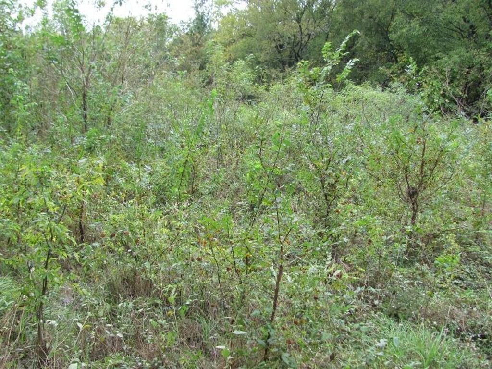

About Us / Services
Established in 2003, Jones & Ridenour, Inc. is an environmental consulting firm offering natural resource services to private and public clients across the southern United States, with a primary focus on Texas.
Conveniently located in and around the Dallas / Fort Worth Metroplex, our offices are in Arlington and Denison, Texas. We specialize in wetlands consulting — creative solutions that meet project objectives while obtaining regulatory compliance through sound stewardship of aquatic resources.
Services typically range from limited, rapid assessments to turn-key completion and regulatory compliance monitoring. Tasks are often combined to minimize cost and turnaround, and sequenced so evaluations flow smoothly whether you are in early diligence or preparing for construction.

Premier services
Staff biologists maintain strong relationships with agencies and project partners to keep work efficient and defensible.
- Preliminary Wetland Determinations
- Wetland and Other Waters of the U.S. Delineations
- Section 404 Permitting
- Wetlands Mitigation
- Wetlands Mitigation Banking
- Wetland Creation, Enhancement, and Restoration
- Endangered Species Investigations
- Cultural Resources Assistance
- Tree Surveys
- Biological Evaluations
- Environmental Assessments
- Wildlife Censusing and Management
- Expert Witness Testimony
- Stormwater Studies
- Compliance Monitoring